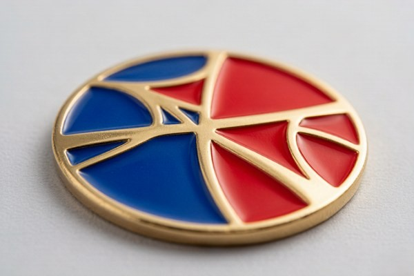
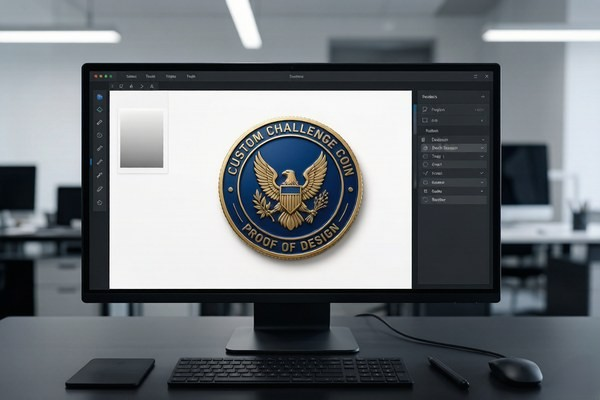

Why Metal Manufacturing Changes Design Rules
In web design and commercial print, artists enjoy continuous tonal gradations, razor-thin hairlines, and millions of digital RGB hues. In custom coin manufacturing, your design is physically milled into steel dies by CNC bits or laser engravers, then stamped into molten metal under hundreds of tons of hydraulic pressure.
Understanding this physical translation is the key to mastering coin design. When you design for soft enamel or hard enamel, you are not merely placing colors on a surface — you are creating tiny metallic reservoirs. If two different enamel colors touch without a raised metal line between them, the liquid resins will bleed together during curing.
By preparing vector artwork according to factory tooling tolerances from the outset, you eliminate revision delays, prevent costly mold remakes, and ensure your emblem looks as sharp in the hand as it did on your artboard.
Vector vs. Raster: The Only Format That Scales
The single most important technical requirement for precision coin tooling is vector artwork. Unlike raster images (JPEG, PNG, PSD, GIF), which are grids of static pixels, vector graphics (AI, EPS, SVG, PDF) are mathematical paths composed of points, lines, curves, and coordinates.
Why Vectors Are Mandatory for Tooling
Die-cutting machines do not read pixels; they read vector paths. The CNC pantograph traces the vector bezier curves to carve the raised metal ridges and recessed cavities into hardened steel. When a low-resolution pixel image is sent to production, the machine cannot distinguish clean edges from jagged pixel staircases.
Supported File Formats
- Adobe Illustrator (.AI): The industry-standard native vector format. Save files with all fonts converted to outlines.
- Encapsulated PostScript (.EPS): Universally compatible vector format readable across all CAD/CAM tooling software.
- Scalable Vector Graphics (.SVG): Lightweight XML-based vector format ideal for clean digital handoffs.
- Print-Ready Vector PDF (.PDF): Vector art exported at 100% scale with editing capabilities preserved.
If you only have a hand-drawn sketch, a scanned badge, or a low-resolution JPEG logo, do not worry: our factory art department can redraw and vectorize your concept for free within our 12-hour proof turnaround.
The 0.3mm Rule: Minimum Metal Line Thickness
The physical barrier separating individual enamel colors is the metal wall. When artwork is shrunk down to coin size (typically 1.75 to 2.25 inches across), thin vector strokes can become dangerously narrow.

Observe these factory engineering thresholds:
- Soft Enamel Minimum Line Width: 0.30 mm (0.85 pt). In soft enamel, the color sits slightly lower than the metal ridge, giving a forgiving, tactile contour. Lines narrower than 0.30 mm risk collapsing during die stamping.
- Hard Enamel Minimum Line Width: 0.35 mm (1.0 pt). Because hard enamel is ground down flat with abrasive stones and polished to a mirror shine, ultra-thin metal ridges can be ground away entirely during surface finishing if they lack sufficient width.
- Minimum Recessed Enamel Well Area: 0.40 mm across. Syringe dispensers must physically fit inside the cavity to inject liquid pigment. Areas smaller than a pinpoint cannot hold liquid enamel and will be converted to solid raised metal.
Pantone PMS Color Matching in Coin Production
One of the most frequent surprises for first-time buyers is color deviation caused by uncalibrated computer screens. An RGB hex code like #1E3A8A on an OLED laptop display will look entirely different from an sRGB office monitor, and neither corresponds to a real-world liquid pigment.
To eliminate guesswork, challenge coin manufacturing relies exclusively on the Pantone Matching System (PMS Solid Coated):
- Specify PMS Codes: Always label each color area on your proof with its designated Pantone number (e.g., PMS 186 C for military crimson or PMS 280 C for navy blue).
- Enamel Color Limits: Most custom coin quotes include up to 4 to 6 Pantone colors free of charge. Beyond that, additional colors incur a nominal fee ($0.05–$0.10 per piece). A focused palette of 3 to 5 contrasting colors almost always produces a cleaner, more authoritative visual hierarchy.
- How Metal Plating Affects Color: Remember that metal lines frame every color. As detailed in our challenge coin plating guide, shiny gold plating warms adjacent colors, while bright nickel provides a cool neutral boundary, and antique patinas darken color borders with soft charcoal undertones.
Typography and Lettering Guidelines for Coins
Challenge coins often carry proud unit mottos, founding years, core values, and commemorative inscriptions. However, text is where inexperienced designers encounter the most readability failures.
Minimum Font Size
Text on a challenge coin should never measure less than 5 to 6 points (approx. 1.2 mm to 1.5 mm cap height). Any smaller, and the internal counters of letters like "A", "e", "R", and "B" will fill with metal or overflow with enamel, rendering the text illegible.
Font Selection Best Practices
- Choose Bold, Clean Sans-Serif Fonts: Typefaces like Helvetica Bold, Montserrat, Futura Bold, or Impact maintain high clarity at coin scale because their stroke weights are consistent.
- Avoid Delicate Serifs and Scripts: Fine calligraphic script fonts, ornate gothic blackletters, and thin-serif fonts like Bodoni or Times New Roman thin strokes will vanish during die striking.
- Convert All Fonts to Outlines: Always convert live text to outlines/curves (
Ctrl+Shift+Oin Adobe Illustrator) before sending files. This ensures your custom fonts do not default to standard system typefaces on the factory CAD terminal.
Perimeter Text Alignment and Edge Clearance
When setting text along the circular outer border, maintain at least 1.5 mm to 2.0 mm clearance from the outer rim. If text sits right up against the edge, decorative machining such as rope edges, cross-cut diamond borders, or reeded rims will slice through the lettering during outer edge milling.
Orientation: Coin Turn vs. Medal Turn
Because challenge coins feature artwork on both sides, defining how the reverse aligns with the obverse is a crucial detail that must be confirmed before mold cutting.

- Medal Turn (Up-to-Up / Book Turn): When you turn the coin horizontally from left to right like turning the page of a book, both sides remain right-side-up. Over 95% of custom challenge coins use Medal Turn orientation.
- Coin Turn (Top-to-Bottom / Currency Turn): When you flip the coin vertically from bottom to top, the reverse is upright; but if turned horizontally, the reverse appears upside down (standard for US circulating coinage). Specify Medal Turn unless you intentionally desire currency-style flipping.
When to Use UV Printing Instead of Enamel
Sometimes your artwork includes elements that physics simply will not allow in stamped metal and enamel. These include:
- Continuous color fades, sunset gradients, and radial blends.
- Real photographic portraits of leaders, military aircraft, or department mascots.
- Extremely dense micro-lettering (such as lists of all fallen members in a unit).
- Watermarked department badges with complex drop shadows.
For these designs, UV printed challenge coins are the modern solution. The coin's metal base and 3D borders are struck first, and the photo-realistic image is digitally printed onto the metal with micro-droplet UV-cured inks at 1440 DPI, topped with a crystal-clear epoxy protective dome.
Challenge Coin Artwork Specifications at a Glance
Keep this technical reference table handy when building your next coin vector layout:
| Design Element | Minimum Specification | Recommended Best Practice | Common Failure Point |
|---|---|---|---|
| Metal Line Width (Soft Enamel) | 0.30 mm (0.85 pt) | 0.35 mm – 0.50 mm | Lines collapse, enamel colors bleed |
| Metal Line Width (Hard Enamel) | 0.35 mm (1.00 pt) | 0.40 mm – 0.60 mm | Lines ground away during surface buffing |
| Recessed Enamel Cavity | 0.40 mm diameter | ≥ 0.60 mm diameter | Too small for syringe needle injection |
| Font Height (Cap Height) | 1.2 mm (approx. 5 pt) | 1.5 mm – 2.5 mm | Enamel floods letter counters (O, A, B) |
| Outer Rim Safety Margin | 1.5 mm from cut line | 2.0 mm from cut line | Reeded/rope edge clips into text |
| Color System | Pantone Solid Coated | 3–5 contrasting spot PMS | RGB shift from screen to metal |
| File Resolution (If Raster) | 300 DPI at 100% scale | Vector .AI / .EPS paths | Pixelation along curved stamp borders |
How to Read Your Digital Proof Before Approving
Once you submit artwork, our team generates a comprehensive 1:1 scale digital proof within 12 hours. Reviewing this document with an eagle eye prevents production surprises:
- Inspect Raised vs. Recessed Callouts: Proofs distinguish raised polished metal from recessed textured metal and colored enamel wells. Confirm that key details are on the correct structural plane.
- Verify Pantone Callouts: Double-check the PMS numbers listed in the color swatches at the margin of the proof sheet.
- Check Overall Dimensions and Thickness: Verify the specified diameter (e.g., 2.0" / 50.8 mm) and thickness (e.g., 3.0 mm or 3.5 mm). If your coin features deep 3D sculptural relief, confirm that adequate thickness has been allocated.
- Read Every Inscription Letter by Letter: Typographical errors in metal are permanent once the steel die is hardened. Have at least two teammates proofread all names, dates, and Latin mottos before giving final sign-off.
Ready to Design Your Custom Coins?
Get a free quote and digital proof in 12 hours. Our team will help you refine your design for the best possible result.
Get Free QuoteFrequently Asked Questions
What file format is best for challenge coin manufacturing?
Vector files created in Adobe Illustrator, CorelDRAW, or Inkscape (.AI, .EPS, .SVG, or vector-based .PDF) are the gold standard. Vectors scale infinitely without pixelation, allowing CNC milling machines and pantographs to cut the die with microscopic accuracy.
What is the minimum line thickness for enamel challenge coins?
The minimum recommended metal line thickness is 0.3 mm (roughly 0.85 pt) for soft enamel and 0.35 mm for hard enamel. Any thinner, and the molten metal may not flow cleanly into the mold during die striking, causing enamel colors to bleed across boundaries.
Can I use RGB or CMYK color codes for my coin design?
Screen colors (RGB) and print inks (CMYK) vary significantly depending on monitor calibration. Challenge coin factories use the Pantone Matching System (Pantone Solid Coated / PMS) to hand-mix liquid enamel pigments for 100% color consistency.
Can photographs or gradients be put onto a challenge coin?
Traditional enamel requires flat, solid color fills separated by raised metal walls. If your artwork contains photographic faces, fine halftones, or smooth ombre gradients, it must be produced using high-resolution UV printing on metal rather than stamped enamel.
What is the difference between coin orientation and medal orientation?
Coin turn (top-to-bottom flip) is standard currency orientation, where the reverse is upside down when flipped horizontally. Medal turn (side-to-side flip) keeps both front and back right-side-up when turned like a book page, which is the default for 95% of custom challenge coins.
Conclusion
Preparing production-ready artwork for a challenge coin requires treating metal as a sculptural medium rather than a flat sheet of paper. By building your files in vector paths, respecting the 0.3 mm line thickness rule, selecting verified Pantone spot colors, and sticking to bold, legible typography, you ensure that your design translates cleanly into a heavyweight, flawless metal coin.
Have an idea or a rough sketch you want to see in metal? Send us your concept for a free quote and digital proof. Our expert design team will vectorize, format, and optimize your artwork into factory-accurate production proofs within 12 hours — with unlimited revisions until it looks exactly right.